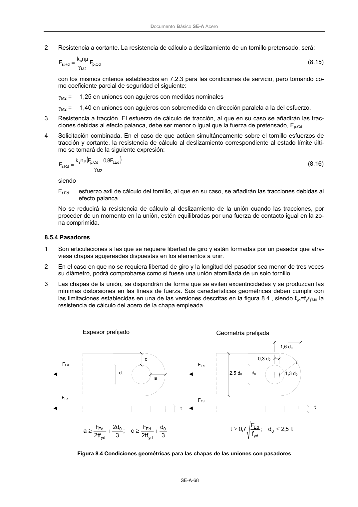
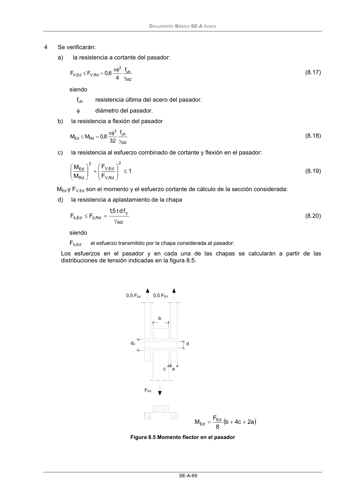
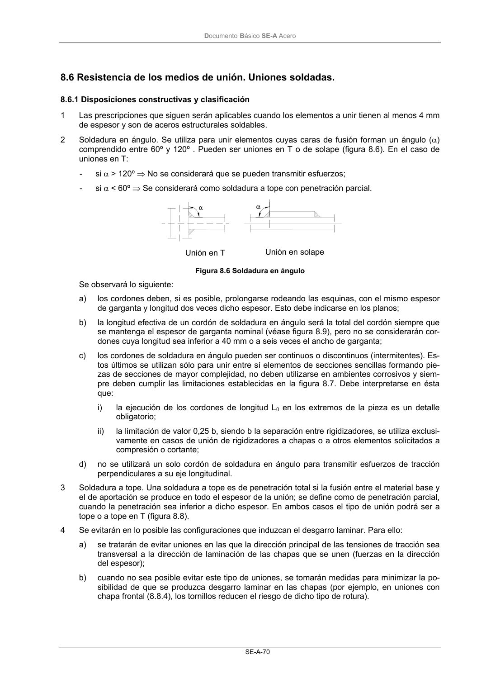

DB-SE-A Acero · edición 2007-10-23 · capa oficial
Documento DB-SE-A-oficial · SHA-256 del PDF 9ed9ea694aabfbda3bfbbef40dfe9223fde05d13c35bc2ba9751e5a96a22a64f
Copia fiel del PDF fuente · Fuente oficial
Ficha de la disposición en la fuente oficial
Formatos: JSON del segmento · Markdown
8.5.4 Pasadores 1 Son articulaciones a las que se requiere libertad de giro y están formadas por un pasador que atra- viesa chapas agujereadas dispuestas en los elementos a unir. 2 En el caso en que no se requiera libertad de giro y la longitud del pasador sea menor de tres veces su diámetro, podrá comprobarse como si fuese una unión atornillada de un solo tornillo. 3 Las chapas de la unión, se dispondrán de forma que se eviten excentricidades y se produzcan las mínimas distorsiones en las líneas de fuerza. Sus características geométricas deben cumplir con las limitaciones establecidas en una de las versiones descritas en la figura 8.4., siendo fyd=fy/γM0 la resistencia de cálculo del acero de la chapa empleada. Figura 8.4 Condiciones geométricas para las chapas de las uniones con pasadores FEd FEd FEd d0 d0 2,5 d0 t t 0,3 d0 1,6 d0 1,3 d0 c a FEd Espesor prefijado Geometría prefijada 3 d tf 2 F c ; 3 d 2 tf 2 F a 0 yd Ed 0 yd Ed + ≥ + ≥ t 5,2 d ; f F 7,0 t 0 yd Ed ≤ ≥ DocumentoBásico SE-A Acero SE-A-69 4 Se verificarán: a) la resistencia a cortante del pasador: 2 M ub 2 Rd , V Ed , V f 4 6,0 F F γ πφ = ≤ (8.17) siendo fub resistencia última del acero del pasador. φ diámetro del pasador. b) la resistencia a flexión del pasador 2 M yb 3 Rd Ed f 32 8,0 M M γ πφ = ≤ (8.18) c) la resistencia al esfuerzo combinado de cortante y flexión en el pasador: 1 F F M M 2 Rd , V Ed , V 2 Rd Ed ≤ + (8.19) MEd y FV.Ed son el momento y el esfuerzo cortante de cálculo de la sección considerada: d) la resistencia a aplastamiento de la chapa 2 M y Rd , b Ed , b f d t 5,1 F F γ = ≤ (8.20) siendo Fb,Ed el esfuerzo transmitido por la chapa considerada al pasador: Los esfuerzos en el pasador y en cada una de las chapas se calcularán a partir de las distribuciones de tensión indicadas en la figura 8.5. ( ) a 2 c 4 b 8 F M Ed Ed + + = Figura 8.5 Momento flector en el pasador 0,5 FEd 0,5 FEd b d0 d a c FEd DocumentoBásico SE-A Acero SE-A-70


